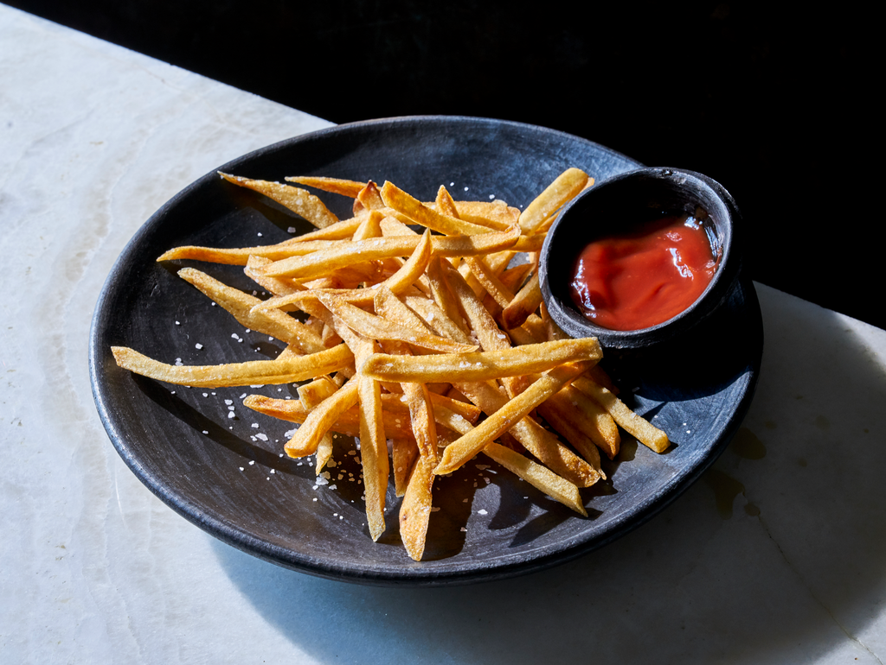
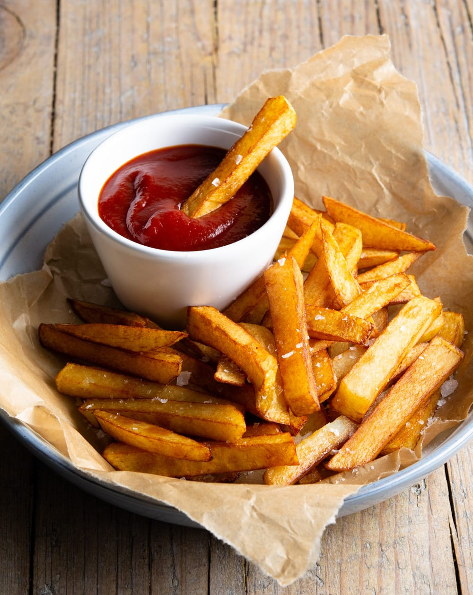

How to make Truffle Fries
Introduction
I chose this recipe because I've loved French fries ever since I could remember. They've been my favourite food my entire life and are always good and really easy to make. When I was in around 4th grade, I made fries almost every single day after school. I've probably done over 5 projects on how to make fries, so I'd say I'm a pro. Anyways, my favourite fast food fries are here!

Ingredients
- 1kg Potatos
- 1.5-2L Vegetable Oil
- 1 ½ tsp Salt
- 1L Water
- ½ tsp Black Pepper
- ½ tsp Garlic Powder
- ½ tsp Paprika

Instructions
- Wash, peel, and cut potatoes into even long strips.
- Soak potato sticks in cold water for 10 minutes.
- Drain and thoroughly dry potatoes.
- Fry the fries at 325°/165° C for 4-6 minutes, until pale and tender.
- Remove and rest the fries for 5-10 minutes.
- Increase oil temperature to 375° degrees/190° C.
- Put them back in the oil and fry them for 2 minutes until golden brown and crispy.
- Drain on a paper towel and season immediately with salt.